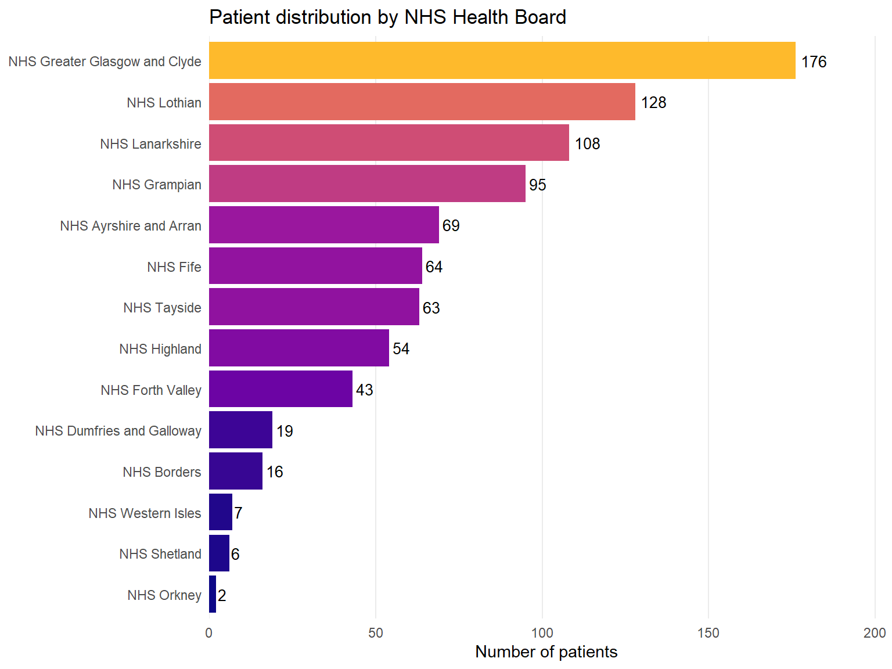
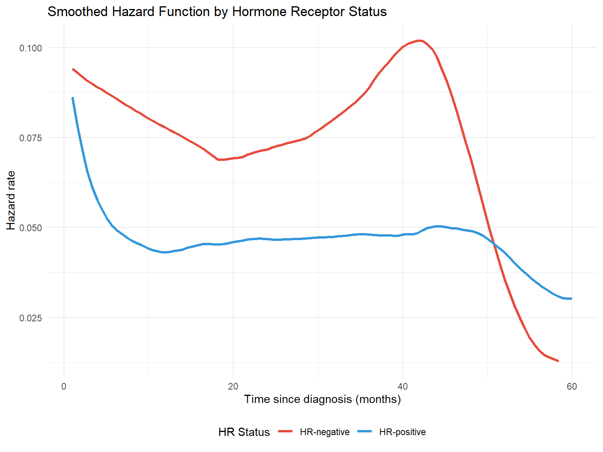
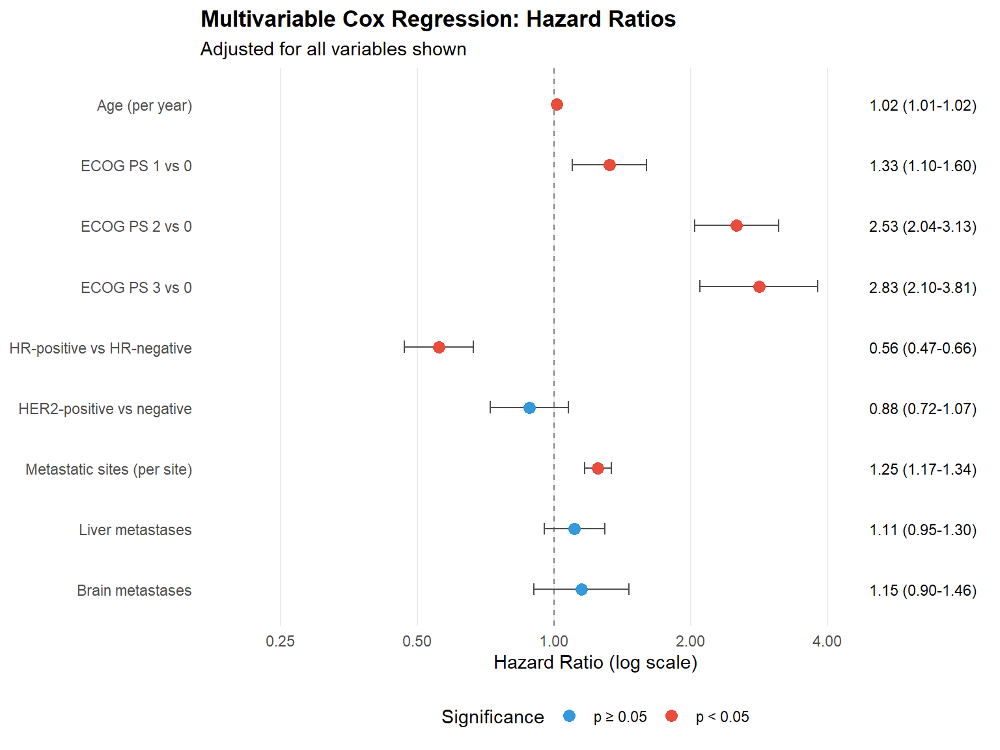
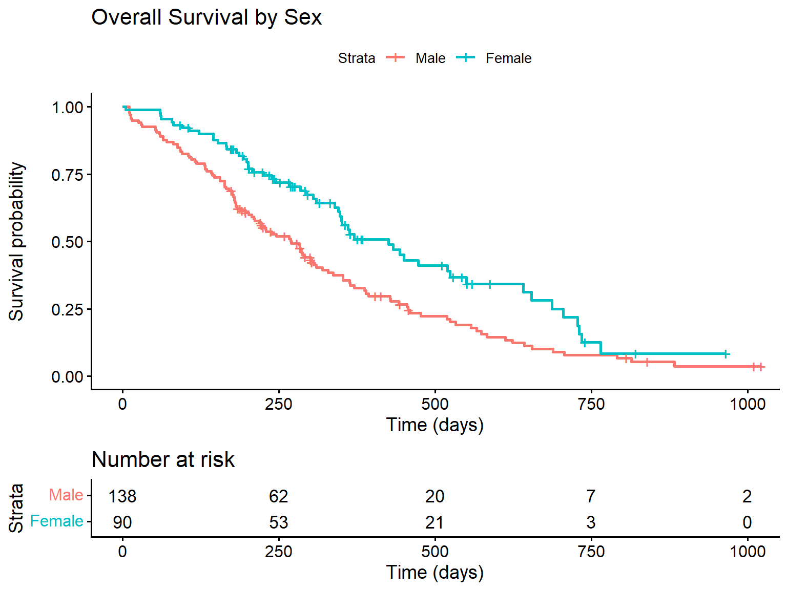

This tutorial provides a practical introduction to survival analysis using R, illustrated with a synthetic cohort of patients with metastatic breast cancer from Scottish NHS Health Boards. By the end of this tutorial, you will be able to:
Create and interpret survival objects
Fit and visualise Kaplan-Meier survival curves
Conduct log-rank tests to compare survival between groups
Fit Cox proportional hazards regression models
About the Data
The dataset used in this tutorial is entirely synthetic and was generated for educational purposes. It does not contain any real patient data but has been designed to reflect realistic patterns seen in metastatic breast cancer populations.
2 Why Survival Analysis?
Before diving into the methods, it’s worth understanding why we need specialised techniques for time-to-event data.
2.1 The Problem with Standard Methods
Imagine you’re analysing a clinical trial where patients were followed for up to 5 years. At the end of the study, some patients have died, but others are still alive. If you simply calculate the proportion who died, you’re ignoring valuable information — patients who were still alive contributed follow-up time showing they survived at least that long.
This is the problem of censoring. A patient is censored when we know they survived up to a certain point, but we don’t know what happened after that. Common reasons for censoring include: - The study ended while the patient was still alive - The patient was lost to follow-up - The patient withdrew from the study
2.2 What Happens If We Ignore Censoring?
Consider a simple example with 10 patients. Five died during follow-up, three were still alive when the study ended (censored), and two were lost to follow-up (also censored).
If we naively calculate survival as “proportion who didn’t die”, we might include the censored patients in the denominator as if they were followed for the entire study period. This overestimates survival because we’re treating patients with incomplete follow-up as if they definitely survived.
Conversely, if we calculate median survival time only among those who died, we underestimate it because we’re excluding patients who survived longer but were censored.
Survival analysis methods — particularly the Kaplan-Meier estimator — correctly account for censored observations by including each patient’s follow-up time in the analysis up until the point they were censored.
2.3 Key Concepts
Survival function S(t): The probability of surviving beyond time t. It starts at 1 (everyone alive at time 0) and decreases over time.
Hazard: The instantaneous risk of the event occurring at time t, given that the individual has survived up to that point. Think of it as the “danger” at each moment.
Censoring: When we have incomplete information about a patient’s outcome. Most commonly “right-censoring” — we know the patient survived at least until a certain time, but not what happened afterwards.
Proportional hazards: The assumption (used in Cox regression) that the ratio of hazards between groups remains constant over time. This doesn’t mean hazards are constant — they can both increase or decrease — but their ratio stays the same.
2.4 The Non-Informative Censoring Assumption
Most survival methods assume non-informative censoring — that a patient’s censoring time is unrelated to their underlying survival time. If this assumption is violated, survival estimates can be biased.
Examples of potentially informative censoring:
Sicker patients drop out of a study because they feel too unwell to attend appointments → survival estimates biased upward (look better than reality)
Patients who are doing well stop attending follow-up because they feel they don’t need it → survival estimates biased downward
Patients with severe side effects withdraw from a treatment trial → treatment effect estimates biased
When designing or analysing a study, carefully consider whether reasons for censoring might be related to prognosis. If informative censoring is suspected, sensitivity analyses or specialised methods may be needed.
3 Loading the Data
We begin by loading our synthetic Scottish metastatic breast cancer cohort from the Excel file.
Code
# Load the datasetmbc_data <-read_xlsx("scottish_mbc_cohort.xlsx")# Preview the data structureglimpse(mbc_data)
The dataset contains 850 patients diagnosed between 2018-01-05 and 2022-12-28 across all 14 Scottish NHS Health Boards.
3.1 Calculating Survival Times from Dates
In practice, clinical data often comes with dates rather than pre-calculated survival times. Here’s how to calculate follow-up time from diagnosis and last contact dates using the lubridate package.
Code
# Example: Creating survival times from datesdate_example <-tibble(patient_id =c("P001", "P002", "P003"),diagnosis_date =as.Date(c("2020-03-15", "2019-08-22", "2021-01-10")),last_contact_date =as.Date(c("2023-06-20", "2022-04-15", "2023-12-31")),status =c(1, 1, 0) # 1 = died, 0 = alive/censored)# Calculate follow-up time in monthsdate_example <- date_example |>mutate(follow_up_months =as.numeric(difftime(last_contact_date, diagnosis_date, units ="days") ) /30.44# average days per month )date_example |>kable(digits =1)
patient_id
diagnosis_date
last_contact_date
status
follow_up_months
P001
2020-03-15
2023-06-20
1
39.2
P002
2019-08-22
2022-04-15
1
31.8
P003
2021-01-10
2023-12-31
0
35.6
Time Units
Choose time units appropriate for your disease. For aggressive cancers like metastatic breast cancer, months are sensible. For slow-growing conditions, years might be better. Whatever you choose, be consistent throughout your analysis.
4 Patient Characteristics
Before conducting survival analysis, it is essential to understand the composition of our cohort. We present descriptive statistics stratified by hormone receptor status.
Table 1: Patient characteristics by hormone receptor status
Characteristic
Overall
N = 8501
HR-negative
N = 1921
HR-positive
N = 6581
age_at_diagnosis
61.0 (54.0, 70.0)
61.0 (55.0, 69.0)
61.0 (54.0, 70.0)
age_group
<50
123 (14%)
24 (13%)
99 (15%)
50-64
396 (47%)
95 (49%)
301 (46%)
65-74
210 (25%)
46 (24%)
164 (25%)
75+
121 (14%)
27 (14%)
94 (14%)
sex
Female
842 (99%)
187 (97%)
655 (100%)
Male
8 (0.9%)
5 (2.6%)
3 (0.5%)
simd_quintile
1
204 (24%)
45 (23%)
159 (24%)
2
208 (24%)
44 (23%)
164 (25%)
3
155 (18%)
38 (20%)
117 (18%)
4
153 (18%)
33 (17%)
120 (18%)
5
130 (15%)
32 (17%)
98 (15%)
ecog_ps
0
248 (29%)
49 (26%)
199 (30%)
1
348 (41%)
87 (45%)
261 (40%)
2
192 (23%)
38 (20%)
154 (23%)
3
62 (7.3%)
18 (9.4%)
44 (6.7%)
er_status
Negative
225 (26%)
192 (100%)
33 (5.0%)
Positive
625 (74%)
0 (0%)
625 (95%)
pr_status
Negative
275 (32%)
192 (100%)
83 (13%)
Positive
575 (68%)
0 (0%)
575 (87%)
her2_status
Negative
699 (82%)
164 (85%)
535 (81%)
Positive
151 (18%)
28 (15%)
123 (19%)
n_metastatic_sites
1
307 (36%)
66 (34%)
241 (37%)
2
242 (28%)
64 (33%)
178 (27%)
3
161 (19%)
37 (19%)
124 (19%)
4
106 (12%)
18 (9.4%)
88 (13%)
5
34 (4.0%)
7 (3.6%)
27 (4.1%)
bone_mets
624 (73%)
149 (78%)
475 (72%)
liver_mets
307 (36%)
69 (36%)
238 (36%)
lung_mets
260 (31%)
53 (28%)
207 (31%)
brain_mets
90 (11%)
21 (11%)
69 (10%)
presentation
De novo metastatic
250 (29%)
62 (32%)
188 (29%)
Recurrent
600 (71%)
130 (68%)
470 (71%)
first_line_treatment
Chemo + Targeted
105 (12%)
26 (14%)
79 (12%)
Chemotherapy
284 (33%)
166 (86%)
118 (18%)
Endocrine + Targeted
339 (40%)
0 (0%)
339 (52%)
Endocrine only
122 (14%)
0 (0%)
122 (19%)
observed_time
13.2 (5.6, 23.4)
8.6 (4.4, 17.3)
14.6 (6.5, 25.4)
status
Censored
147 (17%)
16 (8.3%)
131 (20%)
Died
703 (83%)
176 (92%)
527 (80%)
1 Median (Q1, Q3); n (%)
4.2 Distribution by Health Board
Code
mbc_data |>count(health_board) |>mutate(health_board =fct_reorder(health_board, n)) |>ggplot(aes(x = n, y = health_board, fill = n)) +geom_col(show.legend =FALSE) +geom_text(aes(label = n), hjust =-0.2, size =3.5) +scale_fill_viridis_c(option ="plasma", end =0.85) +scale_x_continuous(expand =expansion(mult =c(0, 0.15))) +labs(x ="Number of patients",y =NULL,title ="Patient distribution by NHS Health Board" ) +theme_minimal() +theme(panel.grid.major.y =element_blank(),panel.grid.minor =element_blank() )

Figure 1: Patient distribution across Scottish NHS Health Boards
5 Creating a Survival Object
The foundation of survival analysis in R is the Surv() function from the survival package. This function creates a special object that encodes both the time-to-event and the censoring indicator.
5.1 Understanding Censoring
In our dataset:
observed_time: Time from diagnosis to death or last follow-up (months)
status: Event indicator (1 = death occurred, 0 = censored/alive)
Censoring occurs when we do not observe the event of interest. In this study, patients are censored if they were still alive at the end of the study period.
5.2 Creating the Survival Object
Code
# Create the survival objectsurv_obj <-Surv(time = mbc_data$observed_time, event = mbc_data$status)# Examine the first 20 observationshead(surv_obj, 20)
Numbers without a + indicate observed events (deaths)
Numbers with a + indicate censored observations (patient was alive at that time)
6 Kaplan-Meier Survival Estimation
The Kaplan-Meier (KM) estimator is a non-parametric method for estimating the survival function from observed survival times.
6.1 Fitting the KM Curve
Code
# Fit Kaplan-Meier estimator for the entire cohortkm_fit <-survfit(Surv(observed_time, status) ~1, data = mbc_data)# Summary of the KM fitsummary(km_fit, times =c(6, 12, 24, 36, 48, 60), extend =TRUE)
The median survival time is the time at which 50% of patients have experienced the event. It’s the preferred measure of “average” survival because survival times are typically skewed — a few long survivors can dramatically inflate the mean.
6.4 Estimating Survival at Specific Time Points
Often we want to report survival probability at clinically meaningful time points, such as 1-year or 2-year survival.
Code
# Get survival estimates at specific timestime_points <-c(12, 24, 36, 48, 60) # monthssurv_summary <-summary(km_fit, times = time_points, extend =TRUE)# Create a nice tabletibble(`Time (months)`= surv_summary$time,`N at risk`= surv_summary$n.risk,`Survival probability`= surv_summary$surv,`95% CI lower`= surv_summary$lower,`95% CI upper`= surv_summary$upper) |>mutate(`Survival (95% CI)`=sprintf("%.1f%% (%.1f%%-%.1f%%)", `Survival probability`*100,`95% CI lower`*100,`95% CI upper`*100) ) |>select(`Time (months)`, `N at risk`, `Survival (95% CI)`) |>kable()
Time (months)
N at risk
Survival (95% CI)
12
463
54.2% (51.0%-57.7%)
24
207
30.3% (27.3%-33.7%)
36
94
17.9% (15.2%-21.0%)
48
27
8.2% (6.1%-11.1%)
60
9
5.2% (3.3%-8.0%)
Don’t Ignore Censoring!
A common mistake is to calculate survival as simply “number who didn’t die / total number”. This ignores censoring and will give you biased estimates. Always use proper survival analysis methods like Kaplan-Meier.
The extend Argument
When using summary() on a survfit object with specific time points, you may encounter an error if a requested time exceeds the maximum follow-up in your data. Setting extend = TRUE allows the function to return the last known survival estimate for times beyond the data — essentially assuming no further events occurred.
7 Survival Curves by Subgroups
One of the most common uses of KM analysis is comparing survival between different patient groups.
While survival curves show the probability of surviving beyond time t, hazard functions show the instantaneous rate of the event occurring at time t, given survival up to that point.
8.1 Cumulative Hazard Function
The cumulative hazard function, \(H(t)\), represents the accumulated risk up to time t.
Figure 6: Cumulative hazard function by hormone receptor status
8.2 Smoothed Hazard Function
To visualise the instantaneous hazard rate, we can use kernel smoothing methods.
Code
# Using muhaz package for smoothed hazard estimationlibrary(muhaz)# Calculate smoothed hazard for each HR grouphr_pos_data <- mbc_data |>filter(hormone_receptor =="HR-positive")hr_neg_data <- mbc_data |>filter(hormone_receptor =="HR-negative")haz_pos <-muhaz(hr_pos_data$observed_time, hr_pos_data$status, min.time =1, max.time =60)haz_neg <-muhaz(hr_neg_data$observed_time, hr_neg_data$status, min.time =1, max.time =60)# Combine into a data frame for plottinghazard_df <-bind_rows(tibble(time = haz_pos$est.grid,hazard = haz_pos$haz.est,group ="HR-positive" ),tibble(time = haz_neg$est.grid,hazard = haz_neg$haz.est,group ="HR-negative" ))ggplot(hazard_df, aes(x = time, y = hazard, colour = group)) +geom_line(linewidth =1.2) +scale_colour_manual(values =c("HR-negative"="#E74C3C", "HR-positive"="#3498DB"),name ="HR Status" ) +labs(x ="Time since diagnosis (months)",y ="Hazard rate",title ="Smoothed Hazard Function by Hormone Receptor Status" ) +theme_minimal() +theme(legend.position ="bottom")

Figure 7: Smoothed hazard function estimates
Interpreting the Hazard Function
The hazard rate represents the instantaneous risk of death at any given time point. A higher hazard indicates greater risk.
9 Log-Rank Test
The log-rank test is the most widely used method to formally compare survival distributions between two or more groups. It tests the null hypothesis that there is no difference in survival between groups.
9.1 How the Log-Rank Test Works
The log-rank test is essentially a chi-squared test applied to survival data. At each time point where an event occurs, the test compares the observed number of events in each group to the expected number of events if there were truly no difference between groups.
The expected number of events in each group is calculated based on the proportion of patients still at risk in that group. If Group A has 60% of the remaining patients at a given time point, we would expect 60% of the events at that time to occur in Group A.
The test statistic is:
\[\chi^2 = \frac{(O - E)^2}{Var(O-E)}\]
Where O is the total observed events and E is the total expected events in a group. Under the null hypothesis of no difference, this follows a chi-squared distribution with degrees of freedom equal to the number of groups minus one.
Key Properties of the Log-Rank Test
It is a non-parametric test — it makes no assumptions about the shape of the survival curves
It compares the entire survival experience, not just survival at a single time point
It gives equal weight to all time points (early and late events contribute equally)
It is most powerful when the hazard ratio is constant over time (proportional hazards)
It does not provide an estimate of the size of the difference — only whether a difference exists
9.2 Comparing Hormone Receptor Groups
Code
# Log-rank test for hormone receptor statuslogrank_hr <-survdiff(Surv(observed_time, status) ~ hormone_receptor, data = mbc_data)logrank_hr
Call:
survdiff(formula = Surv(observed_time, status) ~ hormone_receptor,
data = mbc_data)
N Observed Expected (O-E)^2/E (O-E)^2/V
hormone_receptor=HR-negative 192 176 119 27.33 33.5
hormone_receptor=HR-positive 658 527 584 5.57 33.5
Chisq= 33.5 on 1 degrees of freedom, p= 7e-09
Observed: Total events (deaths) observed in each group
Expected: Events expected if there were no difference between groups
(O-E)^2/E and (O-E)^2/V: Components of the chi-squared statistic
If the observed and expected values are similar, the groups have similar survival. Large differences between observed and expected suggest the groups differ. A group with fewer observed than expected events has better survival than average; a group with more observed than expected has worse survival.
9.3 Comparing ECOG Performance Status Groups
When comparing more than two groups, the log-rank test provides an overall (omnibus) test of whether any differences exist. A significant result tells you that at least one group differs from the others, but not which specific groups differ.
Code
# Log-rank test for ECOG PSlogrank_ecog <-survdiff(Surv(observed_time, status) ~ ecog_ps, data = mbc_data)logrank_ecog
Sometimes we want to compare groups while adjusting for a potential confounding variable. The stratified log-rank test performs the comparison within strata of the adjusting variable, then combines the results. This is analogous to the Cochran-Mantel-Haenszel test for contingency tables.
Code
# Compare HR status, stratified by ECOG PSlogrank_strat <-survdiff(Surv(observed_time, status) ~ hormone_receptor +strata(ecog_ps), data = mbc_data)logrank_strat
Call:
survdiff(formula = Surv(observed_time, status) ~ hormone_receptor +
strata(ecog_ps), data = mbc_data)
N Observed Expected (O-E)^2/E (O-E)^2/V
hormone_receptor=HR-negative 192 176 114 33.14 41
hormone_receptor=HR-positive 658 527 589 6.44 41
Chisq= 41 on 1 degrees of freedom, p= 2e-10
This tests whether hormone receptor status affects survival after accounting for differences in ECOG performance status across the groups.
10 Cox Proportional Hazards Regression
The Cox proportional hazards model is the cornerstone of survival analysis, allowing us to examine the relationship between multiple covariates and survival time simultaneously. It was introduced by Sir David Cox in 1972 and remains the most widely used regression method for time-to-event data.
10.1 Why Use Cox Regression?
The log-rank test tells us whether groups differ, but not by how much. It also cannot adjust for multiple confounders simultaneously. Cox regression addresses both limitations:
It provides hazard ratios that quantify the size of effects
It can include multiple covariates (both categorical and continuous)
\(h(t|X)\) is the hazard at time \(t\) for a patient with covariates \(X\)
\(h_0(t)\) is the baseline hazard — the hazard when all covariates equal zero
\(\beta_1, \beta_2, ..., \beta_p\) are the regression coefficients
\(\exp(\beta)\) gives the hazard ratio for a one-unit increase in the covariate
Why “Semi-Parametric”?
The Cox model is called semi-parametric because:
The covariate effects (\(\beta\) coefficients) are estimated parametrically
The baseline hazard\(h_0(t)\) is left completely unspecified — no distributional assumption is made
This flexibility is a major advantage: the model works regardless of whether the underlying survival distribution is exponential, Weibull, or any other shape. The trade-off is that we cannot directly estimate survival probabilities without additional assumptions (though we can still compare groups via hazard ratios).
10.3 The Proportional Hazards Assumption
The model assumes that hazard ratios are constant over time. If patient A has twice the hazard of patient B at 1 month, they should still have twice the hazard at 12 months, 24 months, and so on.
Mathematically, for two patients with covariate values \(X_A\) and \(X_B\):
The baseline hazard \(h_0(t)\) cancels out, leaving a ratio that does not depend on time.
10.4 Univariable Cox Models
First, let’s examine each potential predictor individually. Univariable analysis helps identify candidate variables for a multivariable model and provides unadjusted effect estimates.
coef: The log hazard ratio (\(\beta\)) — positive values indicate increased hazard
exp(coef): The hazard ratio — the multiplicative effect on hazard
se(coef): Standard error of the coefficient
z: Wald test statistic (coef/se)
Pr(>|z|): P-value for testing whether the coefficient differs from zero
lower .95 / upper .95: 95% confidence interval for the hazard ratio
Concordance: A measure of model discrimination (0.5 = no better than chance, 1.0 = perfect)
Likelihood ratio test: Overall test of whether the model is better than a null model
10.6 Understanding Hazard Ratios
The hazard ratio (HR) is the key output from Cox regression. It represents the relative rate at which events occur in one group compared to another, at any given point in time.
Interpreting HR values:
HR = 1: No difference between groups
HR > 1: Increased hazard (worse survival) compared to reference
HR < 1: Decreased hazard (better survival) compared to reference
For categorical variables: The HR compares each category to a reference category. For example, if HR-positive vs HR-negative has HR = 0.6, then HR-positive patients have 40% lower hazard (die at 0.6 times the rate) compared to HR-negative patients.
For continuous variables: The HR represents the change in hazard for each one-unit increase. For example, if age has HR = 1.02, then each additional year of age increases the hazard by 2%.
HR is Not a Risk or Probability
The hazard ratio is often misinterpreted as a relative risk. While they can be similar in some situations, they measure different things:
Relative risk compares cumulative probabilities (e.g., “twice as likely to die by 5 years”)
Hazard ratio compares instantaneous rates (e.g., “dying at twice the rate at any moment”)
A HR of 2 does not mean twice the probability of the event. Be precise in your interpretation, and avoid phrases like “twice as likely” when reporting hazard ratios.
Abbreviations: CI = Confidence Interval, HR = Hazard Ratio
10.8 Forest Plot of Hazard Ratios
Code
# Create forest plot data from modelforest_data <-tidy(cox_multi, conf.int =TRUE, exponentiate =TRUE) |>mutate(# Clean up term names for displayterm_label =case_when( term =="age_at_diagnosis"~"Age (per year)", term =="ecog_ps1"~"ECOG PS 1 vs 0", term =="ecog_ps2"~"ECOG PS 2 vs 0", term =="ecog_ps3"~"ECOG PS 3 vs 0", term =="hormone_receptorHR-positive"~"HR-positive vs HR-negative", term =="her2_statusPositive"~"HER2-positive vs negative", term =="n_metastatic_sites"~"Metastatic sites (per site)", term =="liver_metsYes"~"Liver metastases", term =="brain_metsYes"~"Brain metastases",TRUE~ term ),# Create HR labelhr_label =sprintf("%.2f (%.2f-%.2f)", estimate, conf.low, conf.high),# Significance indicatorsignificant = p.value <0.05 ) |># Reverse order for plotting (top to bottom)mutate(term_label =fct_inorder(term_label) |>fct_rev())# Create the forest plotggplot(forest_data, aes(x = estimate, y = term_label)) +# Reference line at HR = 1geom_vline(xintercept =1, linetype ="dashed", colour ="grey50") +# Confidence intervalsgeom_errorbarh(aes(xmin = conf.low, xmax = conf.high),height =0.2,colour ="grey30" ) +# Point estimatesgeom_point(aes(colour = significant),size =3 ) +# HR labels on the rightgeom_text(aes(x =max(conf.high) *1.3, label = hr_label),hjust =0,size =3 ) +# Colour scalescale_colour_manual(values =c("TRUE"="#E74C3C", "FALSE"="#3498DB"),labels =c("TRUE"="p < 0.05", "FALSE"="p ≥ 0.05"),name ="Significance" ) +# Log scale for x-axisscale_x_log10(breaks =c(0.25, 0.5, 1, 2, 4),limits =c(0.2, max(forest_data$conf.high) *2) ) +labs(x ="Hazard Ratio (log scale)",y =NULL,title ="Multivariable Cox Regression: Hazard Ratios",subtitle ="Adjusted for all variables shown" ) +theme_minimal() +theme(panel.grid.minor =element_blank(),panel.grid.major.y =element_blank(),legend.position ="bottom",plot.title =element_text(face ="bold") )

Figure 8: Forest plot of hazard ratios from the multivariable Cox model
10.9 Model Fit Statistics
We can assess how well the model fits the data using several metrics.
Code
# Model fit statisticsglance(cox_multi) |>select(n, nevent, concordance, std.error.concordance, logLik, AIC, BIC) |>pivot_longer(everything(), names_to ="Statistic", values_to ="Value") |>mutate(Statistic =case_when( Statistic =="n"~"Number of observations", Statistic =="nevent"~"Number of events", Statistic =="concordance"~"Concordance (C-statistic)", Statistic =="std.error.concordance"~"SE of concordance", Statistic =="logLik"~"Log-likelihood", Statistic =="AIC"~"AIC", Statistic =="BIC"~"BIC" ),Value =round(Value, 3) ) |>kable(caption ="Model fit statistics")
Model fit statistics
Statistic
Value
Number of observations
850.000
Number of events
703.000
Concordance (C-statistic)
0.644
SE of concordance
0.011
Log-likelihood
-4080.457
AIC
8178.915
BIC
8219.913
Interpreting Model Fit Statistics
Concordance (C-statistic): Measures discriminative ability — the probability that, for a random pair of patients where one dies first, the model correctly predicts which one. Values range from 0.5 (no better than chance) to 1.0 (perfect discrimination). In clinical models, values of 0.7–0.8 are typically considered acceptable.
AIC/BIC: Information criteria for comparing models. Lower values indicate better fit, penalised for model complexity. Useful for comparing alternative models fitted to the same data.
Log-likelihood: The basis for likelihood ratio tests comparing nested models.
10.10 Predicting Survival for Specific Patients
One practical application of Cox models is predicting survival curves for patients with specific characteristics. Although the Cox model does not directly estimate the baseline hazard, the survfit() function can estimate it from the data and combine it with covariate effects to produce predicted survival curves.
Figure 9: Predicted survival curves for two hypothetical patient profiles
How Predictions Work
The Cox model doesn’t directly estimate the survival function — it estimates hazard ratios. To predict survival, R first estimates a baseline survival function (for a patient with all covariates at reference levels), then adjusts this based on the covariate values using the estimated coefficients.
11 Practice Exercises
The following exercises use datasets built into R’s survival package. Try these to consolidate your learning.
11.1 Exercise 1: The Lung Cancer Dataset
The lung dataset contains survival data from patients with advanced lung cancer. Load it and explore:
Code
# Load the lung datasetdata(lung)# Examine the structureglimpse(lung)
The status variable uses non-standard coding. Recode it so that 0 = censored and 1 = event (death).
Solution
Code
lung <- lung |>mutate(status = status -1) # Convert 1,2 to 0,1# Check the recodingtable(lung$status)
0 1
63 165
11.1.2 Task 1b: Create a Kaplan-Meier curve by sex
Fit a survival curve comparing males and females, and create a plot.
Solution
Code
# Fit the modellung_sex <-survfit(Surv(time, status) ~ sex, data = lung)# Plotggsurvplot( lung_sex,data = lung,risk.table =TRUE,xlab ="Time (days)",ylab ="Survival probability",legend.labs =c("Male", "Female"),title ="Overall Survival by Sex")

Survival by sex in lung cancer patients
11.1.3 Task 1c: Test for differences and fit a Cox model
Conduct a log-rank test and fit a Cox model for sex.
Solution
Code
# Log-rank testsurvdiff(Surv(time, status) ~ sex, data = lung)
Call:
survdiff(formula = Surv(time, status) ~ sex, data = lung)
N Observed Expected (O-E)^2/E (O-E)^2/V
sex=1 138 112 91.6 4.55 10.3
sex=2 90 53 73.4 5.68 10.3
Chisq= 10.3 on 1 degrees of freedom, p= 0.001
Code
# Cox modelcox_lung <-coxph(Surv(time, status) ~ sex, data = lung)summary(cox_lung)
Call:
coxph(formula = Surv(time, status) ~ sex, data = lung)
n= 228, number of events= 165
coef exp(coef) se(coef) z Pr(>|z|)
sex -0.5310 0.5880 0.1672 -3.176 0.00149 **
---
Signif. codes: 0 '***' 0.001 '**' 0.01 '*' 0.05 '.' 0.1 ' ' 1
exp(coef) exp(-coef) lower .95 upper .95
sex 0.588 1.701 0.4237 0.816
Concordance= 0.579 (se = 0.021 )
Likelihood ratio test= 10.63 on 1 df, p=0.001
Wald test = 10.09 on 1 df, p=0.001
Score (logrank) test = 10.33 on 1 df, p=0.001
Interpretation: Females (sex = 2) have significantly better survival than males. The hazard ratio of approximately 0.59 means females die at about 59% the rate of males, or equivalently, males have about 1.7 times higher hazard of death.
11.2 Exercise 2: The Colon Cancer Dataset
The colon dataset contains data from a trial of adjuvant chemotherapy for colon cancer. It has two rows per patient: one for recurrence and one for death.
Code
data(colon)# Filter to death events onlycolon_death <- colon |>filter(etype ==2) # etype 2 = deathglimpse(colon_death)
11.3.1 Task 3a: Calculate median survival by group
Estimate median survival time for each treatment group.
Solution
Code
aml_fit <-survfit(Surv(time, status) ~ x, data = aml)# Median survivalprint(aml_fit)
Call: survfit(formula = Surv(time, status) ~ x, data = aml)
n events median 0.95LCL 0.95UCL
x=Maintained 11 7 31 18 NA
x=Nonmaintained 12 11 23 8 NA
11.3.2 Task 3b: Estimate survival probability at 30 weeks
What proportion of patients in each group survived beyond 30 weeks?
Solution
Code
# Check the range of times in the datarange(aml$time)
[1] 5 161
Code
# Get survival estimates at 30 weeks# Use extend = TRUE to handle times beyond observed datasummary(aml_fit, times =30, extend =TRUE)
Call: survfit(formula = Surv(time, status) ~ x, data = aml)
x=Maintained
time n.risk n.event survival std.err lower 95% CI
30.000 5.000 4.000 0.614 0.153 0.377
upper 95% CI
0.999
x=Nonmaintained
time n.risk n.event survival std.err lower 95% CI
30.000 4.000 8.000 0.292 0.139 0.115
upper 95% CI
0.741
Note: The extend = TRUE argument allows estimation at time points beyond the last observed event for a group by carrying forward the last survival estimate.
11.4 Exercise 4: Cox Modelling with the Veteran Dataset
The veteran dataset describes survival of patients with lung cancer in a Veterans Administration trial.
karno: Karnofsky performance score (0-100, higher is better)
age: Age in years
11.4.1 Task 4a: Fit a Cox model
Fit a Cox model with treatment, Karnofsky score, and age as predictors.
Solution
Code
cox_veteran <-coxph(Surv(time, status) ~ trt + karno + age, data = veteran)summary(cox_veteran)
Call:
coxph(formula = Surv(time, status) ~ trt + karno + age, data = veteran)
n= 137, number of events= 128
coef exp(coef) se(coef) z Pr(>|z|)
trt 0.189546 1.208701 0.185531 1.022 0.307
karno -0.034444 0.966143 0.005232 -6.583 4.62e-11 ***
age -0.003864 0.996143 0.009187 -0.421 0.674
---
Signif. codes: 0 '***' 0.001 '**' 0.01 '*' 0.05 '.' 0.1 ' ' 1
exp(coef) exp(-coef) lower .95 upper .95
trt 1.2087 0.8273 0.8402 1.7388
karno 0.9661 1.0350 0.9563 0.9761
age 0.9961 1.0039 0.9784 1.0142
Concordance= 0.712 (se = 0.022 )
Likelihood ratio test= 43.14 on 3 df, p=2e-09
Wald test = 44.52 on 3 df, p=1e-09
Score (logrank) test = 46.84 on 3 df, p=4e-10
Interpretation:
Treatment (test vs standard) shows no significant effect on survival
Each 1-point increase in Karnofsky score reduces hazard by about 3% (HR ≈ 0.97), and this is highly significant
Age shows no significant association with survival after adjusting for treatment and Karnofsky score
11.5 Exercise 5: Interpretation Questions
These questions test your understanding of survival analysis concepts. Think about each one before revealing the answer.
11.5.1 Question 5a
A Cox model gives a hazard ratio of 2.5 for a binary exposure variable. What does this mean?
Answer
The exposed group experiences the event at 2.5 times the rate of the unexposed group at any given time point. This indicates substantially worse survival in the exposed group.
11.5.2 Question 5b
Why can’t we simply calculate “proportion surviving” to estimate 2-year survival?
Answer
A naive calculation would either:
Treat censored patients as if they survived the full period (overestimating survival), or
Exclude them entirely (potentially biasing in either direction)
The Kaplan-Meier method correctly accounts for censoring by including each patient’s contribution up to their censoring time, then removing them from the risk set.
12 Summary
This tutorial has covered the fundamental techniques of survival analysis in R:
Why survival analysis: Understanding censoring, non-informative censoring assumptions, and why standard methods don’t work for time-to-event data
Survival objects: Created using Surv() to encode time-to-event data with censoring
Kaplan-Meier estimation: Non-parametric estimation of survival curves using survfit()
Survival estimates: Calculating median survival and survival probabilities at specific time points
Hazard functions: Both cumulative and smoothed instantaneous hazard rates
Log-rank tests: Formal comparison of survival between groups using survdiff(), including weighted alternatives
Cox regression: Semi-parametric modelling of hazard ratios using coxph(), including interpretation of HRs
Survival predictions: Generating predicted survival curves for specific patient profiles
---title: "Survival Analysis in R: A Practical Tutorial"subtitle: "Using Scottish Metastatic Breast Cancer Data"author: "Edinburgh Cancer Informatics Group"date: todayformat: html: toc: true toc-depth: 3 toc-location: left number-sections: true code-fold: true code-tools: true code-overflow: wrap theme: flatly highlight-style: github fig-width: 8 fig-height: 6execute: warning: false message: false---```{r}#| label: setup#| include: false# Load required packageslibrary(tidyverse)library(survival)library(survminer)library(gtsummary)library(broom)library(writexl)library(readxl)library(lubridate)library(knitr)library(flextable)# Set seed for reproducibilityset.seed(2024)# Define Scottish Health Boards with approximate population weightshealth_boards <-tibble(health_board =c("NHS Ayrshire and Arran","NHS Borders","NHS Dumfries and Galloway","NHS Fife","NHS Forth Valley","NHS Grampian","NHS Greater Glasgow and Clyde","NHS Highland","NHS Lanarkshire","NHS Lothian","NHS Orkney","NHS Shetland","NHS Tayside","NHS Western Isles" ),pop_weight =c(0.068, 0.021, 0.027, 0.069, 0.056, 0.107, 0.216, 0.059, 0.122, 0.165, 0.004, 0.004, 0.076, 0.005 ))# Generate synthetic patient datan_patients <-850# Function to generate correlated survival times based on covariatesgenerate_survival_data <-function(n, age, ecog, n_mets_sites, er_status, treatment) {# Base hazard parameters baseline_median <-24# months# Hazard ratios (log scale) beta_age <-0.02# per year increase beta_ecog <-0.4# per unit increase beta_mets <-0.25# per additional site beta_er_neg <-0.5# ER negative vs positive beta_chemo <--0.15# chemo vs endocrine only beta_targeted <--0.35# targeted therapy benefit# Calculate linear predictor lp <- beta_age * (age -60) + beta_ecog * ecog + beta_mets * (n_mets_sites -1) + beta_er_neg * (er_status =="Negative") + beta_chemo * (treatment %in%c("Chemotherapy", "Chemo + Targeted")) + beta_targeted * (treatment %in%c("Endocrine + Targeted", "Chemo + Targeted"))# Generate Weibull survival times shape <-1.2 scale <- baseline_median / (log(2)^(1/shape)) *exp(-lp/shape) surv_time <-rweibull(n, shape = shape, scale = scale)# Add some noise surv_time <- surv_time *exp(rnorm(n, 0, 0.2))return(pmax(surv_time, 0.5)) # minimum 0.5 months}# Generate patient characteristicsmbc_data <-tibble(patient_id =sprintf("MBC%04d", 1:n_patients),# Health board based on population weightshealth_board =sample( health_boards$health_board, n_patients,replace =TRUE,prob = health_boards$pop_weight ),# Demographicsage_at_diagnosis =round(rnorm(n_patients, mean =62, sd =12)),sex =sample(c("Female", "Male"), n_patients, replace =TRUE, prob =c(0.99, 0.01)),# SIMD quintile (1 = most deprived, 5 = least deprived)simd_quintile =sample(1:5, n_patients, replace =TRUE, prob =c(0.25, 0.22, 0.20, 0.18, 0.15)),# Clinical characteristicsecog_ps =sample(0:3, n_patients, replace =TRUE, prob =c(0.30, 0.40, 0.22, 0.08)),# Receptor statuser_status =sample(c("Positive", "Negative"), n_patients, replace =TRUE, prob =c(0.75, 0.25)),pr_status =if_else( er_status =="Positive",sample(c("Positive", "Negative"), n_patients, replace =TRUE, prob =c(0.85, 0.15)),sample(c("Positive", "Negative"), n_patients, replace =TRUE, prob =c(0.10, 0.90)) ),her2_status =sample(c("Positive", "Negative"), n_patients, replace =TRUE, prob =c(0.20, 0.80)),# Metastatic sitesn_metastatic_sites =sample(1:5, n_patients, replace =TRUE, prob =c(0.35, 0.30, 0.20, 0.10, 0.05)),# Sites of metastasisbone_mets =sample(c("Yes", "No"), n_patients, replace =TRUE, prob =c(0.70, 0.30)),liver_mets =sample(c("Yes", "No"), n_patients, replace =TRUE, prob =c(0.35, 0.65)),lung_mets =sample(c("Yes", "No"), n_patients, replace =TRUE, prob =c(0.30, 0.70)),brain_mets =sample(c("Yes", "No"), n_patients, replace =TRUE, prob =c(0.10, 0.90)),# De novo vs recurrentpresentation =sample(c("De novo metastatic", "Recurrent"), n_patients, replace =TRUE, prob =c(0.30, 0.70)),# Diagnosis date (between 2018-2022)diagnosis_date =as.Date("2018-01-01") +sample(0:1825, n_patients, replace =TRUE))# Add treatment based on receptor statusmbc_data <- mbc_data |>mutate(first_line_treatment =case_when( er_status =="Positive"& her2_status =="Negative"~sample(c("Endocrine only", "Endocrine + Targeted", "Chemotherapy"), n(), replace =TRUE, prob =c(0.25, 0.55, 0.20)), er_status =="Positive"& her2_status =="Positive"~sample(c("Endocrine + Targeted", "Chemo + Targeted"), n(), replace =TRUE, prob =c(0.40, 0.60)), er_status =="Negative"& her2_status =="Positive"~sample(c("Chemo + Targeted", "Chemotherapy"), n(), replace =TRUE, prob =c(0.85, 0.15)),TRUE~"Chemotherapy" ) )# Regenerate treatment properly (row-wise)mbc_data <- mbc_data |>rowwise() |>mutate(first_line_treatment =case_when( er_status =="Positive"& her2_status =="Negative"~sample(c("Endocrine only", "Endocrine + Targeted", "Chemotherapy"), 1, prob =c(0.25, 0.55, 0.20)), er_status =="Positive"& her2_status =="Positive"~sample(c("Endocrine + Targeted", "Chemo + Targeted"), 1, prob =c(0.40, 0.60)), er_status =="Negative"& her2_status =="Positive"~sample(c("Chemo + Targeted", "Chemotherapy"), 1, prob =c(0.85, 0.15)),TRUE~"Chemotherapy" ) ) |>ungroup()# Constrain agembc_data <- mbc_data |>mutate(age_at_diagnosis =pmax(pmin(age_at_diagnosis, 95), 25))# Generate survival timesmbc_data <- mbc_data |>mutate(survival_months =generate_survival_data(n =n(),age = age_at_diagnosis,ecog = ecog_ps,n_mets_sites = n_metastatic_sites,er_status = er_status,treatment = first_line_treatment ) )# Administrative censoring at study end (December 2023)study_end <-as.Date("2023-12-31")mbc_data <- mbc_data |>mutate(# Calculate potential follow-up timemax_follow_up =as.numeric(difftime(study_end, diagnosis_date, units ="days")) /30.44,# Apply censoringobserved_time =pmin(survival_months, max_follow_up),# Event indicator (1 = death, 0 = censored)status =if_else(survival_months <= max_follow_up, 1L, 0L),# Round observed timeobserved_time =round(observed_time, 1) ) |>select(-survival_months, -max_follow_up)# Create age groupsmbc_data <- mbc_data |>mutate(age_group =cut( age_at_diagnosis,breaks =c(0, 50, 65, 75, Inf),labels =c("<50", "50-64", "65-74", "75+"),right =FALSE ),# Create binary ER status for simpler analyseshormone_receptor =if_else(er_status =="Positive"| pr_status =="Positive","HR-positive", "HR-negative") )# Save to Excelwrite_xlsx(mbc_data, "scottish_mbc_cohort.xlsx")```# IntroductionThis tutorial provides a practical introduction to survival analysis using R, illustrated with a synthetic cohort of patients with metastatic breast cancer from Scottish NHS Health Boards. By the end of this tutorial, you will be able to:- Create and interpret survival objects- Fit and visualise Kaplan-Meier survival curves- Conduct log-rank tests to compare survival between groups- Fit Cox proportional hazards regression models::: callout-note## About the DataThe dataset used in this tutorial is **entirely synthetic** and was generated for educational purposes. It does not contain any real patient data but has been designed to reflect realistic patterns seen in metastatic breast cancer populations.:::# Why Survival Analysis?Before diving into the methods, it's worth understanding why we need specialised techniques for time-to-event data.## The Problem with Standard MethodsImagine you're analysing a clinical trial where patients were followed for up to 5 years. At the end of the study, some patients have died, but others are still alive. If you simply calculate the proportion who died, you're ignoring valuable information — patients who were still alive contributed follow-up time showing they *survived at least that long*.This is the problem of **censoring**. A patient is censored when we know they survived up to a certain point, but we don't know what happened after that. Common reasons for censoring include:- The study ended while the patient was still alive- The patient was lost to follow-up- The patient withdrew from the study## What Happens If We Ignore Censoring?Consider a simple example with 10 patients. Five died during follow-up, three were still alive when the study ended (censored), and two were lost to follow-up (also censored).If we naively calculate survival as "proportion who didn't die", we might include the censored patients in the denominator as if they were followed for the entire study period. This **overestimates survival** because we're treating patients with incomplete follow-up as if they definitely survived.Conversely, if we calculate median survival time only among those who died, we **underestimate** it because we're excluding patients who survived longer but were censored.Survival analysis methods — particularly the Kaplan-Meier estimator — correctly account for censored observations by including each patient's follow-up time in the analysis up until the point they were censored.## Key Concepts**Survival function S(t)**: The probability of surviving beyond time *t*. It starts at 1 (everyone alive at time 0) and decreases over time.**Hazard**: The instantaneous risk of the event occurring at time *t*, given that the individual has survived up to that point. Think of it as the "danger" at each moment.**Censoring**: When we have incomplete information about a patient's outcome. Most commonly "right-censoring" — we know the patient survived *at least* until a certain time, but not what happened afterwards.**Proportional hazards**: The assumption (used in Cox regression) that the ratio of hazards between groups remains constant over time. This doesn't mean hazards are constant — they can both increase or decrease — but their *ratio* stays the same.## The Non-Informative Censoring AssumptionMost survival methods assume **non-informative censoring** — that a patient's censoring time is unrelated to their underlying survival time. If this assumption is violated, survival estimates can be biased.**Examples of potentially informative censoring:**- Sicker patients drop out of a study because they feel too unwell to attend appointments → survival estimates biased upward (look better than reality)- Patients who are doing well stop attending follow-up because they feel they don't need it → survival estimates biased downward- Patients with severe side effects withdraw from a treatment trial → treatment effect estimates biasedWhen designing or analysing a study, carefully consider whether reasons for censoring might be related to prognosis. If informative censoring is suspected, sensitivity analyses or specialised methods may be needed.# Loading the DataWe begin by loading our synthetic Scottish metastatic breast cancer cohort from the Excel file.```{r}#| label: load-data# Load the datasetmbc_data <-read_xlsx("scottish_mbc_cohort.xlsx")# Preview the data structureglimpse(mbc_data)```The dataset contains `r nrow(mbc_data)` patients diagnosed between `r min(mbc_data$diagnosis_date)` and `r max(mbc_data$diagnosis_date)` across all 14 Scottish NHS Health Boards.## Calculating Survival Times from DatesIn practice, clinical data often comes with dates rather than pre-calculated survival times. Here's how to calculate follow-up time from diagnosis and last contact dates using the `lubridate` package.```{r}#| label: date-calculation-example# Example: Creating survival times from datesdate_example <-tibble(patient_id =c("P001", "P002", "P003"),diagnosis_date =as.Date(c("2020-03-15", "2019-08-22", "2021-01-10")),last_contact_date =as.Date(c("2023-06-20", "2022-04-15", "2023-12-31")),status =c(1, 1, 0) # 1 = died, 0 = alive/censored)# Calculate follow-up time in monthsdate_example <- date_example |>mutate(follow_up_months =as.numeric(difftime(last_contact_date, diagnosis_date, units ="days") ) /30.44# average days per month )date_example |>kable(digits =1)```::: callout-tip## Time UnitsChoose time units appropriate for your disease. For aggressive cancers like metastatic breast cancer, months are sensible. For slow-growing conditions, years might be better. Whatever you choose, be consistent throughout your analysis.:::# Patient CharacteristicsBefore conducting survival analysis, it is essential to understand the composition of our cohort. We present descriptive statistics stratified by hormone receptor status.## Summary Table```{r}#| label: tbl-characteristics#| tbl-cap: "Patient characteristics by hormone receptor status"# Create summary tablembc_data |>mutate(simd_quintile =factor(simd_quintile),ecog_ps =factor(ecog_ps),status =factor(status, labels =c("Censored", "Died")) ) |>select( hormone_receptor, age_at_diagnosis, age_group, sex, simd_quintile, ecog_ps, er_status, pr_status, her2_status, n_metastatic_sites, bone_mets, liver_mets, lung_mets, brain_mets, presentation, first_line_treatment, observed_time, status ) |>tbl_summary(by = hormone_receptor,statistic =list(all_continuous() ~"{median} ({p25}, {p75})",all_categorical() ~"{n} ({p}%)" ),digits =list(all_continuous() ~1),missing ="ifany" ) |>add_overall() |>bold_labels()```## Distribution by Health Board```{r}#| label: fig-healthboard#| fig-cap: "Patient distribution across Scottish NHS Health Boards"mbc_data |>count(health_board) |>mutate(health_board =fct_reorder(health_board, n)) |>ggplot(aes(x = n, y = health_board, fill = n)) +geom_col(show.legend =FALSE) +geom_text(aes(label = n), hjust =-0.2, size =3.5) +scale_fill_viridis_c(option ="plasma", end =0.85) +scale_x_continuous(expand =expansion(mult =c(0, 0.15))) +labs(x ="Number of patients",y =NULL,title ="Patient distribution by NHS Health Board" ) +theme_minimal() +theme(panel.grid.major.y =element_blank(),panel.grid.minor =element_blank() )```# Creating a Survival ObjectThe foundation of survival analysis in R is the `Surv()` function from the `survival` package. This function creates a special object that encodes both the time-to-event and the censoring indicator.## Understanding CensoringIn our dataset:- `observed_time`: Time from diagnosis to death or last follow-up (months)- `status`: Event indicator (1 = death occurred, 0 = censored/alive)Censoring occurs when we do not observe the event of interest. In this study, patients are censored if they were still alive at the end of the study period.## Creating the Survival Object```{r}#| label: surv-object# Create the survival objectsurv_obj <-Surv(time = mbc_data$observed_time, event = mbc_data$status)# Examine the first 20 observationshead(surv_obj, 20)```::: callout-tip## Interpreting the OutputIn the survival object:- Numbers without a `+` indicate observed events (deaths)- Numbers with a `+` indicate censored observations (patient was alive at that time):::# Kaplan-Meier Survival EstimationThe Kaplan-Meier (KM) estimator is a non-parametric method for estimating the survival function from observed survival times.## Fitting the KM Curve```{r}#| label: km-fit# Fit Kaplan-Meier estimator for the entire cohortkm_fit <-survfit(Surv(observed_time, status) ~1, data = mbc_data)# Summary of the KM fitsummary(km_fit, times =c(6, 12, 24, 36, 48, 60), extend =TRUE)```The output shows survival probabilities at specific time points with 95% confidence intervals.## Plotting the Overall Survival Curve```{r}#| label: fig-km-overall#| fig-cap: "Overall survival in the Scottish metastatic breast cancer cohort"ggsurvplot( km_fit,data = mbc_data,conf.int =FALSE,risk.table =TRUE,risk.table.col ="strata",risk.table.height =0.25,xlab ="Time since diagnosis (months)",ylab ="Survival probability",title ="Overall Survival in Metastatic Breast Cancer",ggtheme =theme_minimal(),palette ="#2E86AB",break.time.by =12,surv.median.line ="hv")```## Median Survival Time```{r}#| label: median-survival# Extract median survival with confidence intervalsurv_median <-surv_median(km_fit)surv_median |>kable(col.names =c("Strata", "Median", "Lower 95% CI", "Upper 95% CI"),digits =1,caption ="Median overall survival (months)" )```The median survival time is the time at which 50% of patients have experienced the event. It's the preferred measure of "average" survival because survival times are typically skewed — a few long survivors can dramatically inflate the mean.## Estimating Survival at Specific Time PointsOften we want to report survival probability at clinically meaningful time points, such as 1-year or 2-year survival.```{r}#| label: survival-timepoints# Get survival estimates at specific timestime_points <-c(12, 24, 36, 48, 60) # monthssurv_summary <-summary(km_fit, times = time_points, extend =TRUE)# Create a nice tabletibble(`Time (months)`= surv_summary$time,`N at risk`= surv_summary$n.risk,`Survival probability`= surv_summary$surv,`95% CI lower`= surv_summary$lower,`95% CI upper`= surv_summary$upper) |>mutate(`Survival (95% CI)`=sprintf("%.1f%% (%.1f%%-%.1f%%)", `Survival probability`*100,`95% CI lower`*100,`95% CI upper`*100) ) |>select(`Time (months)`, `N at risk`, `Survival (95% CI)`) |>kable()```::: callout-important## Don't Ignore Censoring!A common mistake is to calculate survival as simply "number who didn't die / total number". This ignores censoring and will give you biased estimates. Always use proper survival analysis methods like Kaplan-Meier.:::::: callout-tip## The `extend` ArgumentWhen using `summary()` on a survfit object with specific time points, you may encounter an error if a requested time exceeds the maximum follow-up in your data. Setting `extend = TRUE` allows the function to return the last known survival estimate for times beyond the data — essentially assuming no further events occurred.:::# Survival Curves by SubgroupsOne of the most common uses of KM analysis is comparing survival between different patient groups.## By Hormone Receptor Status```{r}#| label: fig-km-hr#| fig-cap: "Survival by hormone receptor status"km_hr <-survfit(Surv(observed_time, status) ~ hormone_receptor, data = mbc_data)ggsurvplot( km_hr,data = mbc_data,conf.int =FALSE,risk.table =TRUE,risk.table.height =0.30,xlab ="Time since diagnosis (months)",ylab ="Survival probability",title ="Overall Survival by Hormone Receptor Status",legend.title ="HR Status",legend.labs =c("HR-negative", "HR-positive"),ggtheme =theme_minimal(),palette =c("#E74C3C", "#3498DB"),break.time.by =12)```## By ECOG Performance Status```{r}#| label: fig-km-ecog#| fig-cap: "Survival by ECOG performance status"km_ecog <-survfit(Surv(observed_time, status) ~ ecog_ps, data = mbc_data)ggsurvplot( km_ecog,data = mbc_data,conf.int =FALSE,risk.table =TRUE,risk.table.height =0.35,xlab ="Time since diagnosis (months)",ylab ="Survival probability",title ="Overall Survival by ECOG Performance Status",legend.title ="ECOG PS",ggtheme =theme_minimal(),palette ="jco",break.time.by =12)```## By Number of Metastatic Sites```{r}#| label: fig-km-mets#| fig-cap: "Survival by number of metastatic sites"# Create grouped metastatic sites variablembc_data <- mbc_data |>mutate(mets_group =case_when( n_metastatic_sites ==1~"1 site", n_metastatic_sites ==2~"2 sites", n_metastatic_sites >=3~"3+ sites" ) |>factor(levels =c("1 site", "2 sites", "3+ sites")) )km_mets <-survfit(Surv(observed_time, status) ~ mets_group, data = mbc_data)ggsurvplot( km_mets,data = mbc_data,conf.int =FALSE,risk.table =TRUE,risk.table.height =0.30,xlab ="Time since diagnosis (months)",ylab ="Survival probability",title ="Overall Survival by Number of Metastatic Sites",legend.title ="Metastatic Sites",ggtheme =theme_minimal(),palette =c("#27AE60", "#F39C12", "#C0392B"),break.time.by =12)```# Hazard FunctionsWhile survival curves show the probability of surviving beyond time *t*, hazard functions show the instantaneous rate of the event occurring at time *t*, given survival up to that point.## Cumulative Hazard FunctionThe cumulative hazard function, $H(t)$, represents the accumulated risk up to time *t*.```{r}#| label: fig-cumhaz#| fig-cap: "Cumulative hazard function by hormone receptor status"ggsurvplot( km_hr,data = mbc_data,fun ="cumhaz",conf.int =FALSE,xlab ="Time since diagnosis (months)",ylab ="Cumulative hazard",title ="Cumulative Hazard by Hormone Receptor Status",legend.title ="HR Status",legend.labs =c("HR-negative", "HR-positive"),ggtheme =theme_minimal(),palette =c("#E74C3C", "#3498DB"),break.time.by =12)```## Smoothed Hazard FunctionTo visualise the instantaneous hazard rate, we can use kernel smoothing methods.```{r}#| label: fig-hazard#| fig-cap: "Smoothed hazard function estimates"#| warning: false# Using muhaz package for smoothed hazard estimationlibrary(muhaz)# Calculate smoothed hazard for each HR grouphr_pos_data <- mbc_data |>filter(hormone_receptor =="HR-positive")hr_neg_data <- mbc_data |>filter(hormone_receptor =="HR-negative")haz_pos <-muhaz(hr_pos_data$observed_time, hr_pos_data$status, min.time =1, max.time =60)haz_neg <-muhaz(hr_neg_data$observed_time, hr_neg_data$status, min.time =1, max.time =60)# Combine into a data frame for plottinghazard_df <-bind_rows(tibble(time = haz_pos$est.grid,hazard = haz_pos$haz.est,group ="HR-positive" ),tibble(time = haz_neg$est.grid,hazard = haz_neg$haz.est,group ="HR-negative" ))ggplot(hazard_df, aes(x = time, y = hazard, colour = group)) +geom_line(linewidth =1.2) +scale_colour_manual(values =c("HR-negative"="#E74C3C", "HR-positive"="#3498DB"),name ="HR Status" ) +labs(x ="Time since diagnosis (months)",y ="Hazard rate",title ="Smoothed Hazard Function by Hormone Receptor Status" ) +theme_minimal() +theme(legend.position ="bottom")```::: callout-note## Interpreting the Hazard FunctionThe hazard rate represents the instantaneous risk of death at any given time point. A higher hazard indicates greater risk.:::# Log-Rank TestThe log-rank test is the most widely used method to formally compare survival distributions between two or more groups. It tests the null hypothesis that there is no difference in survival between groups.## How the Log-Rank Test WorksThe log-rank test is essentially a chi-squared test applied to survival data. At each time point where an event occurs, the test compares the **observed** number of events in each group to the **expected** number of events if there were truly no difference between groups.The expected number of events in each group is calculated based on the proportion of patients still at risk in that group. If Group A has 60% of the remaining patients at a given time point, we would expect 60% of the events at that time to occur in Group A.The test statistic is:$$\chi^2 = \frac{(O - E)^2}{Var(O-E)}$$Where O is the total observed events and E is the total expected events in a group. Under the null hypothesis of no difference, this follows a chi-squared distribution with degrees of freedom equal to the number of groups minus one.::: callout-note## Key Properties of the Log-Rank Test- It is a **non-parametric test** — it makes no assumptions about the shape of the survival curves- It compares the **entire survival experience**, not just survival at a single time point- It gives **equal weight** to all time points (early and late events contribute equally)- It is most powerful when the **hazard ratio is constant** over time (proportional hazards)- It does **not** provide an estimate of the size of the difference — only whether a difference exists:::## Comparing Hormone Receptor Groups```{r}#| label: logrank-hr# Log-rank test for hormone receptor statuslogrank_hr <-survdiff(Surv(observed_time, status) ~ hormone_receptor, data = mbc_data)logrank_hr``````{r}#| label: logrank-interpretation# Extract p-valuep_val <-1-pchisq(logrank_hr$chisq, length(logrank_hr$n) -1)cat("Log-rank test Chi-squared:", round(logrank_hr$chisq, 2), "\n")cat("Degrees of freedom:", length(logrank_hr$n) -1, "\n")cat("P-value:", format.pval(p_val, digits =3), "\n")```::: callout-tip## Reading the OutputThe `survdiff()` output shows:- **N**: Number of patients in each group- **Observed**: Total events (deaths) observed in each group- **Expected**: Events expected if there were no difference between groups- **(O-E)^2/E** and **(O-E)^2/V**: Components of the chi-squared statisticIf the observed and expected values are similar, the groups have similar survival. Large differences between observed and expected suggest the groups differ. A group with **fewer observed than expected** events has better survival than average; a group with **more observed than expected** has worse survival.:::## Comparing ECOG Performance Status GroupsWhen comparing more than two groups, the log-rank test provides an overall (omnibus) test of whether any differences exist. A significant result tells you that at least one group differs from the others, but not which specific groups differ.```{r}#| label: logrank-ecog# Log-rank test for ECOG PSlogrank_ecog <-survdiff(Surv(observed_time, status) ~ ecog_ps, data = mbc_data)logrank_ecog```## Stratified Log-Rank TestSometimes we want to compare groups while adjusting for a potential confounding variable. The stratified log-rank test performs the comparison within strata of the adjusting variable, then combines the results. This is analogous to the Cochran-Mantel-Haenszel test for contingency tables.```{r}#| label: logrank-stratified# Compare HR status, stratified by ECOG PSlogrank_strat <-survdiff(Surv(observed_time, status) ~ hormone_receptor +strata(ecog_ps), data = mbc_data)logrank_strat```This tests whether hormone receptor status affects survival after accounting for differences in ECOG performance status across the groups.# Cox Proportional Hazards RegressionThe Cox proportional hazards model is the cornerstone of survival analysis, allowing us to examine the relationship between multiple covariates and survival time simultaneously. It was introduced by Sir David Cox in 1972 and remains the most widely used regression method for time-to-event data.## Why Use Cox Regression?The log-rank test tells us *whether* groups differ, but not *by how much*. It also cannot adjust for multiple confounders simultaneously. Cox regression addresses both limitations:- It provides **hazard ratios** that quantify the size of effects- It can include **multiple covariates** (both categorical and continuous)- It can **adjust for confounders** in a single model- It handles **censored data** appropriately## The Cox ModelThe Cox model specifies the hazard function as:$$h(t|X) = h_0(t) \exp(\beta_1 X_1 + \beta_2 X_2 + ... + \beta_p X_p)$$Where:- $h(t|X)$ is the hazard at time $t$ for a patient with covariates $X$- $h_0(t)$ is the **baseline hazard** — the hazard when all covariates equal zero- $\beta_1, \beta_2, ..., \beta_p$ are the regression coefficients- $\exp(\beta)$ gives the **hazard ratio** for a one-unit increase in the covariate::: callout-note## Why "Semi-Parametric"?The Cox model is called semi-parametric because:- The **covariate effects** ($\beta$ coefficients) are estimated parametrically- The **baseline hazard** $h_0(t)$ is left completely unspecified — no distributional assumption is madeThis flexibility is a major advantage: the model works regardless of whether the underlying survival distribution is exponential, Weibull, or any other shape. The trade-off is that we cannot directly estimate survival probabilities without additional assumptions (though we can still compare groups via hazard ratios).:::## The Proportional Hazards AssumptionThe model assumes that hazard ratios are **constant over time**. If patient A has twice the hazard of patient B at 1 month, they should still have twice the hazard at 12 months, 24 months, and so on.Mathematically, for two patients with covariate values $X_A$ and $X_B$:$$\frac{h(t|X_A)}{h(t|X_B)} = \frac{h_0(t) \exp(\beta X_A)}{h_0(t) \exp(\beta X_B)} = \exp(\beta(X_A - X_B))$$The baseline hazard $h_0(t)$ cancels out, leaving a ratio that does not depend on time.## Univariable Cox ModelsFirst, let's examine each potential predictor individually. Univariable analysis helps identify candidate variables for a multivariable model and provides unadjusted effect estimates.```{r}#| label: tbl-univariable#| tbl-cap: "Univariable Cox regression analysis"# Prepare data for modellingmbc_model <- mbc_data |>mutate(ecog_ps =factor(ecog_ps),simd_quintile =factor(simd_quintile),age_group =factor(age_group, levels =c("<50", "50-64", "65-74", "75+")) )# Create univariable Cox regression tablembc_model |>select( observed_time, status, age_at_diagnosis, age_group, ecog_ps, hormone_receptor, her2_status, n_metastatic_sites, mets_group, liver_mets, brain_mets, presentation, simd_quintile ) |>tbl_uvregression(method = coxph,y =Surv(observed_time, status),exponentiate =TRUE,hide_n =TRUE ) |>bold_p() |>bold_labels()```## Multivariable Cox ModelNow we fit a multivariable model including clinically relevant predictors.```{r}#| label: cox-multivar# Fit multivariable Cox modelcox_multi <-coxph(Surv(observed_time, status) ~ age_at_diagnosis + ecog_ps + hormone_receptor + her2_status + n_metastatic_sites + liver_mets + brain_mets,data = mbc_model)summary(cox_multi)```::: callout-tip## Reading the Cox Model OutputThe `summary()` output provides:- **coef**: The log hazard ratio ($\beta$) — positive values indicate increased hazard- **exp(coef)**: The hazard ratio — the multiplicative effect on hazard- **se(coef)**: Standard error of the coefficient- **z**: Wald test statistic (coef/se)- **Pr(>|z|)**: P-value for testing whether the coefficient differs from zero- **lower .95 / upper .95**: 95% confidence interval for the hazard ratio- **Concordance**: A measure of model discrimination (0.5 = no better than chance, 1.0 = perfect)- **Likelihood ratio test**: Overall test of whether the model is better than a null model:::## Understanding Hazard RatiosThe hazard ratio (HR) is the key output from Cox regression. It represents the relative rate at which events occur in one group compared to another, at any given point in time.**Interpreting HR values:**- **HR = 1**: No difference between groups- **HR > 1**: Increased hazard (worse survival) compared to reference- **HR < 1**: Decreased hazard (better survival) compared to reference**For categorical variables**: The HR compares each category to a reference category. For example, if HR-positive vs HR-negative has HR = 0.6, then HR-positive patients have 40% lower hazard (die at 0.6 times the rate) compared to HR-negative patients.**For continuous variables**: The HR represents the change in hazard for each one-unit increase. For example, if age has HR = 1.02, then each additional year of age increases the hazard by 2%.::: callout-warning## HR is Not a Risk or ProbabilityThe hazard ratio is often misinterpreted as a relative risk. While they can be similar in some situations, they measure different things:- **Relative risk** compares cumulative probabilities (e.g., "twice as likely to die by 5 years")- **Hazard ratio** compares instantaneous rates (e.g., "dying at twice the rate at any moment")A HR of 2 does **not** mean twice the probability of the event. Be precise in your interpretation, and avoid phrases like "twice as likely" when reporting hazard ratios.:::## Formatted Multivariable Results```{r}#| label: tbl-multivar#| tbl-cap: "Multivariable Cox regression model"# Create formatted Cox regression tablecox_multi |>tbl_regression(exponentiate =TRUE,label =list( age_at_diagnosis ~"Age at diagnosis (years)", ecog_ps ~"ECOG Performance Status", hormone_receptor ~"Hormone receptor status", her2_status ~"HER2 status", n_metastatic_sites ~"Number of metastatic sites", liver_mets ~"Liver metastases", brain_mets ~"Brain metastases" ) ) |>bold_p() |>bold_labels()```## Forest Plot of Hazard Ratios```{r}#| label: fig-forest#| fig-cap: "Forest plot of hazard ratios from the multivariable Cox model"#| fig-height: 6# Create forest plot data from modelforest_data <-tidy(cox_multi, conf.int =TRUE, exponentiate =TRUE) |>mutate(# Clean up term names for displayterm_label =case_when( term =="age_at_diagnosis"~"Age (per year)", term =="ecog_ps1"~"ECOG PS 1 vs 0", term =="ecog_ps2"~"ECOG PS 2 vs 0", term =="ecog_ps3"~"ECOG PS 3 vs 0", term =="hormone_receptorHR-positive"~"HR-positive vs HR-negative", term =="her2_statusPositive"~"HER2-positive vs negative", term =="n_metastatic_sites"~"Metastatic sites (per site)", term =="liver_metsYes"~"Liver metastases", term =="brain_metsYes"~"Brain metastases",TRUE~ term ),# Create HR labelhr_label =sprintf("%.2f (%.2f-%.2f)", estimate, conf.low, conf.high),# Significance indicatorsignificant = p.value <0.05 ) |># Reverse order for plotting (top to bottom)mutate(term_label =fct_inorder(term_label) |>fct_rev())# Create the forest plotggplot(forest_data, aes(x = estimate, y = term_label)) +# Reference line at HR = 1geom_vline(xintercept =1, linetype ="dashed", colour ="grey50") +# Confidence intervalsgeom_errorbarh(aes(xmin = conf.low, xmax = conf.high),height =0.2,colour ="grey30" ) +# Point estimatesgeom_point(aes(colour = significant),size =3 ) +# HR labels on the rightgeom_text(aes(x =max(conf.high) *1.3, label = hr_label),hjust =0,size =3 ) +# Colour scalescale_colour_manual(values =c("TRUE"="#E74C3C", "FALSE"="#3498DB"),labels =c("TRUE"="p < 0.05", "FALSE"="p ≥ 0.05"),name ="Significance" ) +# Log scale for x-axisscale_x_log10(breaks =c(0.25, 0.5, 1, 2, 4),limits =c(0.2, max(forest_data$conf.high) *2) ) +labs(x ="Hazard Ratio (log scale)",y =NULL,title ="Multivariable Cox Regression: Hazard Ratios",subtitle ="Adjusted for all variables shown" ) +theme_minimal() +theme(panel.grid.minor =element_blank(),panel.grid.major.y =element_blank(),legend.position ="bottom",plot.title =element_text(face ="bold") )```## Model Fit StatisticsWe can assess how well the model fits the data using several metrics.```{r}#| label: model-fit# Model fit statisticsglance(cox_multi) |>select(n, nevent, concordance, std.error.concordance, logLik, AIC, BIC) |>pivot_longer(everything(), names_to ="Statistic", values_to ="Value") |>mutate(Statistic =case_when( Statistic =="n"~"Number of observations", Statistic =="nevent"~"Number of events", Statistic =="concordance"~"Concordance (C-statistic)", Statistic =="std.error.concordance"~"SE of concordance", Statistic =="logLik"~"Log-likelihood", Statistic =="AIC"~"AIC", Statistic =="BIC"~"BIC" ),Value =round(Value, 3) ) |>kable(caption ="Model fit statistics")```::: callout-note## Interpreting Model Fit Statistics- **Concordance (C-statistic)**: Measures discriminative ability — the probability that, for a random pair of patients where one dies first, the model correctly predicts which one. Values range from 0.5 (no better than chance) to 1.0 (perfect discrimination). In clinical models, values of 0.7–0.8 are typically considered acceptable.- **AIC/BIC**: Information criteria for comparing models. Lower values indicate better fit, penalised for model complexity. Useful for comparing alternative models fitted to the same data.- **Log-likelihood**: The basis for likelihood ratio tests comparing nested models.:::## Predicting Survival for Specific PatientsOne practical application of Cox models is predicting survival curves for patients with specific characteristics. Although the Cox model does not directly estimate the baseline hazard, the `survfit()` function can estimate it from the data and combine it with covariate effects to produce predicted survival curves.```{r}#| label: cox-predictions# Create profiles for two hypothetical patientsnew_patients <-tibble(patient_type =c("Lower risk", "Higher risk"),age_at_diagnosis =c(55, 75),ecog_ps =factor(c(0, 2), levels =levels(mbc_model$ecog_ps)),hormone_receptor =c("HR-positive", "HR-negative"),her2_status =c("Negative", "Negative"),n_metastatic_sites =c(1, 3),liver_mets =c("No", "Yes"),brain_mets =c("No", "No"))new_patients |>kable(caption ="Hypothetical patient profiles")``````{r}#| label: fig-cox-predicted#| fig-cap: "Predicted survival curves for two hypothetical patient profiles"# Generate predicted survival curvespred_surv <-survfit(cox_multi, newdata = new_patients)# Plot using ggsurvplotggsurvplot( pred_surv,data = new_patients,conf.int =TRUE,censor =FALSE,xlab ="Time since diagnosis (months)",ylab ="Survival probability",legend.labs =c("Lower risk patient", "Higher risk patient"),legend.title ="Patient profile",palette =c("#27AE60", "#E74C3C"),ggtheme =theme_minimal())```::: callout-note## How Predictions WorkThe Cox model doesn't directly estimate the survival function — it estimates hazard ratios. To predict survival, R first estimates a baseline survival function (for a patient with all covariates at reference levels), then adjusts this based on the covariate values using the estimated coefficients.:::# Practice ExercisesThe following exercises use datasets built into R's `survival` package. Try these to consolidate your learning.## Exercise 1: The Lung Cancer DatasetThe `lung` dataset contains survival data from patients with advanced lung cancer. Load it and explore:```{r}#| label: ex1-data# Load the lung datasetdata(lung)# Examine the structureglimpse(lung)```Key variables:- `time`: Survival time in days- `status`: 1 = censored, 2 = dead (note: non-standard coding!)- `sex`: 1 = Male, 2 = Female- `ph.ecog`: ECOG performance score (0 = good, 5 = dead)### Task 1a: Recode the status variableThe status variable uses non-standard coding. Recode it so that 0 = censored and 1 = event (death).::: {.callout-tip collapse="true"}## Solution```{r}#| label: ex1a-solutionlung <- lung |>mutate(status = status -1) # Convert 1,2 to 0,1# Check the recodingtable(lung$status)```:::### Task 1b: Create a Kaplan-Meier curve by sexFit a survival curve comparing males and females, and create a plot.::: {.callout-tip collapse="true"}## Solution```{r}#| label: ex1b-solution#| fig-cap: "Survival by sex in lung cancer patients"# Fit the modellung_sex <-survfit(Surv(time, status) ~ sex, data = lung)# Plotggsurvplot( lung_sex,data = lung,risk.table =TRUE,xlab ="Time (days)",ylab ="Survival probability",legend.labs =c("Male", "Female"),title ="Overall Survival by Sex")```:::### Task 1c: Test for differences and fit a Cox modelConduct a log-rank test and fit a Cox model for sex.::: {.callout-tip collapse="true"}## Solution```{r}#| label: ex1c-solution# Log-rank testsurvdiff(Surv(time, status) ~ sex, data = lung)# Cox modelcox_lung <-coxph(Surv(time, status) ~ sex, data = lung)summary(cox_lung)```**Interpretation**: Females (sex = 2) have significantly better survival than males. The hazard ratio of approximately 0.59 means females die at about 59% the rate of males, or equivalently, males have about 1.7 times higher hazard of death.:::## Exercise 2: The Colon Cancer DatasetThe `colon` dataset contains data from a trial of adjuvant chemotherapy for colon cancer. It has two rows per patient: one for recurrence and one for death.```{r}#| label: ex2-datadata(colon)# Filter to death events onlycolon_death <- colon |>filter(etype ==2) # etype 2 = deathglimpse(colon_death)```Key variables:- `time`: Days until event or censoring- `status`: 0 = censored, 1 = event- `rx`: Treatment (Obs = observation, Lev = levamisole, Lev+5FU = levamisole + 5-fluorouracil)- `nodes`: Number of positive lymph nodes### Task 2a: Compare survival by treatmentCreate KM curves comparing the three treatment groups.::: {.callout-tip collapse="true"}## Solution```{r}#| label: ex2a-solution#| fig-cap: "Survival by treatment in colon cancer"colon_rx <-survfit(Surv(time, status) ~ rx, data = colon_death)ggsurvplot( colon_rx,data = colon_death,risk.table =TRUE,xlab ="Time (days)",title ="Overall Survival by Treatment")# Log-rank testsurvdiff(Surv(time, status) ~ rx, data = colon_death)```:::### Task 2b: Fit a multivariable Cox modelFit a Cox model including treatment (`rx`), age, sex, and number of positive nodes.::: {.callout-tip collapse="true"}## Solution```{r}#| label: ex2b-solutioncox_colon <-coxph(Surv(time, status) ~ rx + age + sex + nodes,data = colon_death)summary(cox_colon)```**Interpretation**: - Levamisole alone shows no significant benefit over observation- Levamisole + 5FU significantly improves survival (HR ≈ 0.64)- Each additional positive lymph node increases hazard by about 9%- Age and sex are not significantly associated with survival after adjusting for treatment and nodes:::## Exercise 3: The AML DatasetThe `aml` dataset is a small dataset comparing maintenance chemotherapy for acute myelogenous leukaemia.```{r}#| label: ex3-datadata(aml)glimpse(aml)```Variables:- `time`: Survival time in weeks- `status`: 0 = censored, 1 = relapsed- `x`: Treatment group (Maintained or Nonmaintained)### Task 3a: Calculate median survival by groupEstimate median survival time for each treatment group.::: {.callout-tip collapse="true"}## Solution```{r}#| label: ex3a-solutionaml_fit <-survfit(Surv(time, status) ~ x, data = aml)# Median survivalprint(aml_fit)```:::### Task 3b: Estimate survival probability at 30 weeksWhat proportion of patients in each group survived beyond 30 weeks?::: {.callout-tip collapse="true"}## Solution```{r}#| label: ex3b-solution# Check the range of times in the datarange(aml$time)# Get survival estimates at 30 weeks# Use extend = TRUE to handle times beyond observed datasummary(aml_fit, times =30, extend =TRUE)```Note: The `extend = TRUE` argument allows estimation at time points beyond the last observed event for a group by carrying forward the last survival estimate.:::## Exercise 4: Cox Modelling with the Veteran DatasetThe `veteran` dataset describes survival of patients with lung cancer in a Veterans Administration trial.```{r}#| label: ex4-datadata(veteran)glimpse(veteran)```Key variables:- `time`: Survival time in days- `status`: 0 = censored, 1 = dead- `trt`: Treatment (1 = standard, 2 = test)- `karno`: Karnofsky performance score (0-100, higher is better)- `age`: Age in years### Task 4a: Fit a Cox modelFit a Cox model with treatment, Karnofsky score, and age as predictors.::: {.callout-tip collapse="true"}## Solution```{r}#| label: ex4a-solutioncox_veteran <-coxph(Surv(time, status) ~ trt + karno + age, data = veteran)summary(cox_veteran)```**Interpretation**: - Treatment (test vs standard) shows no significant effect on survival- Each 1-point increase in Karnofsky score reduces hazard by about 3% (HR ≈ 0.97), and this is highly significant- Age shows no significant association with survival after adjusting for treatment and Karnofsky score:::## Exercise 5: Interpretation QuestionsThese questions test your understanding of survival analysis concepts. Think about each one before revealing the answer.### Question 5aA Cox model gives a hazard ratio of 2.5 for a binary exposure variable. What does this mean?::: {.callout-tip collapse="true"}## AnswerThe exposed group experiences the event at 2.5 times the rate of the unexposed group at any given time point. This indicates substantially worse survival in the exposed group.:::### Question 5bWhy can't we simply calculate "proportion surviving" to estimate 2-year survival?::: {.callout-tip collapse="true"}## AnswerA naive calculation would either:1. Treat censored patients as if they survived the full period (overestimating survival), or2. Exclude them entirely (potentially biasing in either direction)The Kaplan-Meier method correctly accounts for censoring by including each patient's contribution up to their censoring time, then removing them from the risk set.:::# SummaryThis tutorial has covered the fundamental techniques of survival analysis in R:1. **Why survival analysis**: Understanding censoring, non-informative censoring assumptions, and why standard methods don't work for time-to-event data2. **Survival objects**: Created using `Surv()` to encode time-to-event data with censoring3. **Kaplan-Meier estimation**: Non-parametric estimation of survival curves using `survfit()`4. **Survival estimates**: Calculating median survival and survival probabilities at specific time points5. **Hazard functions**: Both cumulative and smoothed instantaneous hazard rates6. **Log-rank tests**: Formal comparison of survival between groups using `survdiff()`, including weighted alternatives7. **Cox regression**: Semi-parametric modelling of hazard ratios using `coxph()`, including interpretation of HRs8. **Survival predictions**: Generating predicted survival curves for specific patient profiles::: callout-tip## Further Reading**Introductory tutorials:**- [Survival Analysis in R](https://www.emilyzabor.com/survival-analysis-in-r.html) by Emily Zabor — excellent comprehensive tutorial- [Bioconnector Survival Analysis](https://bioconnector.github.io/workshops/r-survival.html) — hands-on workshop materials**Key papers:**- Clark TG et al. (2003) Survival analysis part I-IV. *British Journal of Cancer* — four-part series covering basic to advanced concepts**Books:**- Therneau TM & Grambsch PM (2000) *Modeling Survival Data: Extending the Cox Model*. Springer.- Kleinbaum DG & Klein M (2012) *Survival Analysis: A Self-Learning Text*. 3rd ed. Springer.**R package documentation:**- `vignette("survival")` — comprehensive introduction to the survival package- `vignette("timedep")` — time-dependent covariates and coefficients:::# Session Information```{r}#| label: session-infosessionInfo()```